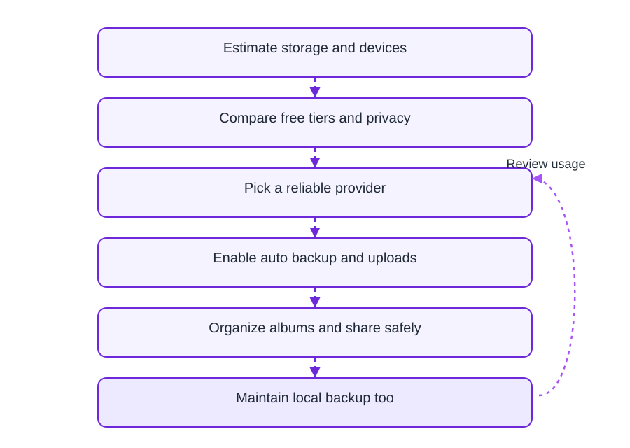

Why this matches the FAQ below
The opening summary and structured FAQ both stress the same point: CDN improves delivery to readers, but you should still slim files before they leave your machine. If anything conflicts, trust the FAQ answers — they are mirrored in schema.org markup for search.
What the upload surface rewards
Real screenshot of the drag-and-drop area (interface language may vary).

Format cheat sheet
| Format | Use when | Watch out |
|---|---|---|
| JPEG | Photos, gradients, noisy textures | Generational loss if you re-save repeatedly |
| PNG | UI shots, logos, alpha channel | Larger than JPEG for photos |
| WebP / AVIF | Modern browsers, controlled audiences | Keep JPEG/PNG fallbacks for odd clients |
JPEG quality starting points
- 80%: default recommendation for web galleries.
- 85%: premium campaigns with large displays.
- 70%: only for thumbnails or aggressive bandwidth caps.
Online storage vs sharing workflow
Diagram compares “dump everything raw” vs “normalize then publish” — English labels.

After optimization: your share output
What recipients ultimately open — link + QR generated post-upload.

Field teams: high-res discipline
Automotive example diagram — same idea applies to any shoot with hundreds of RAWs.

FAQ
Yes for oversized sources. It shortens your upload time and mobile readers still get CDN acceleration when they open the gallery.
Start around 80–85% for photos. Adjust upward if you see banding in skies or skin.
PNG when you need transparency or razor UI edges; JPEG for photographic content.
Expect CDN caching and efficient delivery — not a substitute for uploading reasonable file sizes from the start.
The Chinese product name for MaiImg.